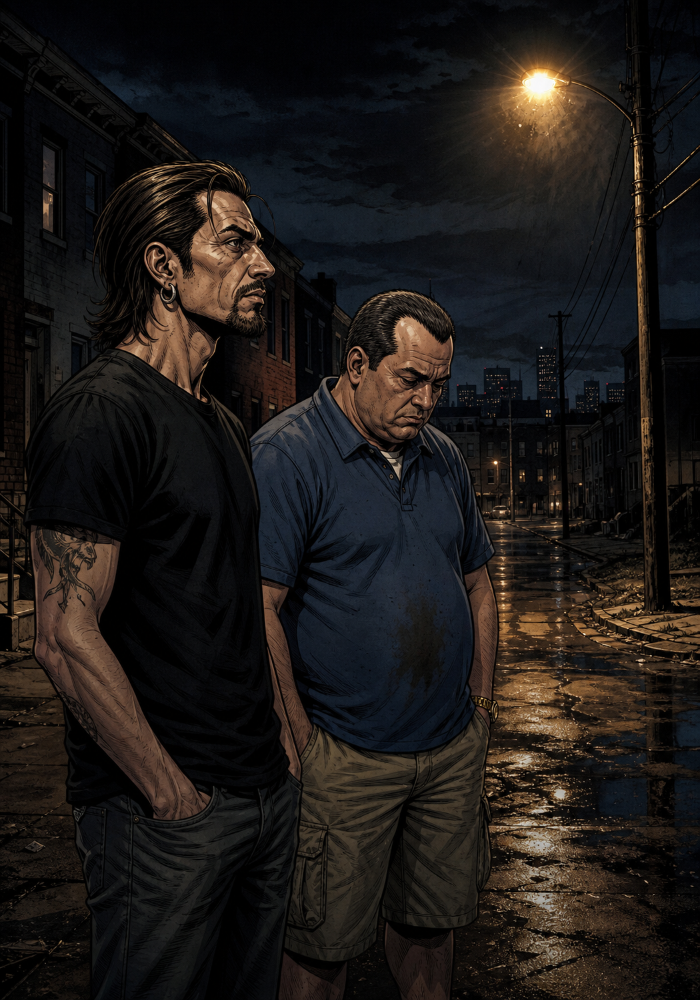

TONI
"Rulo. ¿Dónde coño estamos? ¿Y por qué huele a cubo de basura con aspiraciones?"
RULO
"Baltimore. 2002. Esto no es una serie, Toni. Es una ciudad."
West Baltimore. Noche. Una esquina como cualquier otra.

RULO
"'El rey no puede moverse solo. Necesita a todo el mundo. Pero es el que menos puede hacer.'"
TONI
"Este camello me ha explicado el capitalismo mejor que mi profe. Y tiene diecinueve años. Me voy a casa a llorar."
El patio del bloque. Ajedrez con tapones de botella.
OMAR COMIN'... ☠

TONI
"Para. ¿Ese tío va solo con una escopeta, silbando, y todos le dejan pasar?"
RULO
"Omar tiene un código. No roba a civiles. En Baltimore, un código vale más que un arma."
El callejón. Omar silbando 'El granjero en el valle'.

RULO
"El número dos del narco de West Baltimore. Tomando apuntes. Aplicando la demanda elástica al crack. Idris Elba."
TONI
"Me odio a mí mismo."

TONI
"¡Me has puesto otra serie! ¡Hay polacos! ¡Y griegos! ¡Y sindicatos! ¡Necesito un puto organigrama!"
RULO
"Es la misma. El sistema tritura igual al camello que al estibador. Presta atención."
El puerto. Madrugada. El colapso industrial, en silencio.
¡¡JODER CON LOS MUELLES!!
"El juego está amañado. Todo el sistema está roto."
— Rulo, Evangelio según Baltimore
TONI
"¿Este comandante acaba de legalizar la droga en tres calles? ¿Y funcionó?"
RULO
"La criminalidad bajó un 14%. Pero la política lo destruyó. No puedes ganar elecciones admitiendo que la guerra es mentira."
Hamsterdam. La verdad que nadie podía permitirse admitir.

TONI
"Rulo. Estos son niños. No van a salir bien de esta, ¿verdad? ¿Cuántos?"
Rulo no contestó. Y eso era la respuesta.
Temporada 4. La escuela. El golpe más duro.

TONI
"Este Bubbles me está matando. Cada vez que sale quiero cambiar de canal. Pero no lo hago. ¿Por qué no lo hago?"
RULO
"Porque ya te importa. Es el alma de la serie."
El yonqui. El informante. El que no tiene nada.

TONI
"Este poli es el mayor desastre funcional que he visto. Lleva cuatro episodios bebiendo y saboteando a sus jefes."
RULO
"El mejor detective de Baltimore. — Qué ciudad de mierda. — Ahora lo estás entendiendo."

TONI
"Ahora es una serie de periodistas. O sea que nadie funciona."
RULO
"Nadie. La policía, los sindicatos, la política, la escuela, la prensa. Y todos se convencen de que sí. Espera al último capítulo."
Temporada 5. La prensa. La última institución que falla.

TONI
"Ha ganado el sistema. ¿Y para qué hemos visto cinco temporadas?"
RULO
"Siempre gana el sistema. La serie no te pide que lo arregles. Solo que lo mires."
La misma esquina. Caras nuevas. El ciclo sigue.

TONI
"¿Es la mejor serie de la historia o no? Dímelo ya, coño."
RULO
"No lo sé. Sé que cuando acaba no quieres hablar con nadie. Solo quedarte quieto un momento. Y eso casi ninguna serie lo hace."
TONI
"...Ponme la primera de Los Soprano."
El juego está amañado. Y no puedes dejar de jugar.
FIN.
Veredicto final · Zaska y Acción
LA MEJOR PUTA SERIE
QUE HAS VISTO EN TU VIDA.
The Wire · HBO · 2002—2008 · El juego está amañado